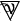

Corwin Ade Arph Jago - taverna
18:02 Vahn
Vahn  [piano terra - bancone] ...buonasera Ofelia. [sorride alla donna di buone maniere e dal viso rotondo, fermandosi al bancone]…avete predisposto il polpo con le patate seguendo la ricetta di Mirael, come vi avevo chiesto? [il tono è gentile, non v’è traccia di autorità.]…l’ultima volta che l’avete cucinato Adema Moore ha addirittura detto…”ottimo.” [l’ultima parola viene pronunciata con finto tono baritonale e un’espressione severa. Gli occhi del bardo giocano con quelli dell’ostessa in quel misto di premura e complimenti.]…ci siederemo a quel tavolo là. [indicando il tavolo tondo libero vicino al bancone, quello direttamente di fronte alle scale che portano di sopra.]…sapete se Messer Swan è già arrivato? [le domanda poi con tono leggermente più apprensivo. Due dita della mano infatti tamburellano sul bordo dell’agenda che regge a se, senza produrre alcun suono. L’ostessa, devota ficcanaso del Ducato, gli dice qualcosa indicando poi le scale.]
[piano terra - bancone] ...buonasera Ofelia. [sorride alla donna di buone maniere e dal viso rotondo, fermandosi al bancone]…avete predisposto il polpo con le patate seguendo la ricetta di Mirael, come vi avevo chiesto? [il tono è gentile, non v’è traccia di autorità.]…l’ultima volta che l’avete cucinato Adema Moore ha addirittura detto…”ottimo.” [l’ultima parola viene pronunciata con finto tono baritonale e un’espressione severa. Gli occhi del bardo giocano con quelli dell’ostessa in quel misto di premura e complimenti.]…ci siederemo a quel tavolo là. [indicando il tavolo tondo libero vicino al bancone, quello direttamente di fronte alle scale che portano di sopra.]…sapete se Messer Swan è già arrivato? [le domanda poi con tono leggermente più apprensivo. Due dita della mano infatti tamburellano sul bordo dell’agenda che regge a se, senza produrre alcun suono. L’ostessa, devota ficcanaso del Ducato, gli dice qualcosa indicando poi le scale.]
Vahn [piano terra - bancone] ...buonasera Ofelia. [sorride alla donna di buone maniere e dal viso rotondo, fermandosi al bancone]…avete predisposto il polpo con le patate seguendo la ricetta di Mirael, come vi avevo chiesto? [il tono è gentile, non v’è traccia di autorità.]…l’ultima volta che l’avete cucinato Adema Moore ha addirittura detto…”ottimo.” [l’ultima parola viene pronunciata con finto tono baritonale e un’espressione severa. Gli occhi del bardo giocano con quelli dell’ostessa in quel misto di premura e complimenti.]…ci siederemo a quel tavolo là. [indicando il tavolo tondo libero vicino al bancone, quello direttamente di fronte alle scale che portano di sopra.]…sapete se Messer Swan è già arrivato? [le domanda poi con tono leggermente più apprensivo. Due dita della mano infatti tamburellano sul bordo dell’agenda che regge a se, senza produrre alcun suono. L’ostessa, devota ficcanaso del Ducato, gli dice qualcosa indicando poi le scale.]18:05 Ariel
Ariel  [Primo piano - Corridoio] [ Apre la porta della taverna e muove qualche passo in sala. Indossa un corpetto nero sopra pantaloni del medesimo colore. Le spalle coperte da una camicia più grande della sua taglia, capelli corvini accrocchiati sulla nuca con uno spillone d’argento. ] Dunque abbiamo ripreso i lavori, speriamo non ci siano altri intoppi. [ Sembra sia il prosieguo di una conversazione già avviata, quella che ha con l’elfo che la segue a ruota. ]
[Primo piano - Corridoio] [ Apre la porta della taverna e muove qualche passo in sala. Indossa un corpetto nero sopra pantaloni del medesimo colore. Le spalle coperte da una camicia più grande della sua taglia, capelli corvini accrocchiati sulla nuca con uno spillone d’argento. ] Dunque abbiamo ripreso i lavori, speriamo non ci siano altri intoppi. [ Sembra sia il prosieguo di una conversazione già avviata, quella che ha con l’elfo che la segue a ruota. ]
Ariel [Primo piano - Corridoio] [ Apre la porta della taverna e muove qualche passo in sala. Indossa un corpetto nero sopra pantaloni del medesimo colore. Le spalle coperte da una camicia più grande della sua taglia, capelli corvini accrocchiati sulla nuca con uno spillone d’argento. ] Dunque abbiamo ripreso i lavori, speriamo non ci siano altri intoppi. [ Sembra sia il prosieguo di una conversazione già avviata, quella che ha con l’elfo che la segue a ruota. ]18:05 Ariel [Primo piano - Corridoio] [ Primo piano - Corridoio ] = [ Locanda - Sala ]
18:07Arphenix  [Locanda - Sala] [ Il colore dell’abbigliamento segue quello della compagna, nero. Camicia, pantaloni e stivaletti. Capelli sciolti, bianchi, che superano le scapole ] Eh, speriamo.. [ Commenta scocciato mentre è dietro di un passo ad Ariel ]
[Locanda - Sala] [ Il colore dell’abbigliamento segue quello della compagna, nero. Camicia, pantaloni e stivaletti. Capelli sciolti, bianchi, che superano le scapole ] Eh, speriamo.. [ Commenta scocciato mentre è dietro di un passo ad Ariel ]
Arphenix [Locanda - Sala] [ Il colore dell’abbigliamento segue quello della compagna, nero. Camicia, pantaloni e stivaletti. Capelli sciolti, bianchi, che superano le scapole ] Eh, speriamo.. [ Commenta scocciato mentre è dietro di un passo ad Ariel ]Corwin ti sussurra: si vede che ariel e arphenyx non hanno frequentato la scuola FsV
18:08 Jago
Jago
Jago 
[1 piano | sala comune] sei sempre stato tu quello bravo con le parole,e le mie dita le più sottili...[ tamburella qualcosa in aria protestando di rimando] io faccio quello che voglio, nell'esatto istante in cui lo voglio e per i motivi che preferisco...[prosegue voltandosi nuovamente a favore degli occhi di Corwin, scrutandolo poi da capo a piedi] e ora di grazia....se non le dispiace, io vado a servirmi il pranzo....o...la cena....o quel che è....vista l'ora...[fa per voltarsi, di nuovo e per proseguire verso le scale che conducono al piano di sotto]18:14 Corwin
Corwin  [primo piano | sala comune] Ma cosa avrai mai fatto alle ore del pranzo, da digiunare e sentire i morsi della fame ora? [allegro, si porta il calice alle labbra, ne beve senza muovere altri muscoli]
[primo piano | sala comune] Ma cosa avrai mai fatto alle ore del pranzo, da digiunare e sentire i morsi della fame ora? [allegro, si porta il calice alle labbra, ne beve senza muovere altri muscoli]
Corwin [primo piano | sala comune] Ma cosa avrai mai fatto alle ore del pranzo, da digiunare e sentire i morsi della fame ora? [allegro, si porta il calice alle labbra, ne beve senza muovere altri muscoli]18:15Vahn [piano terra - bancone] [annuisce all’ostessa e fa per muovere passo verso le scale, quando sente la porta aprirsi di nuovo e due voci conosciute. Si ferma poco prima del primo gradino, posando gli occhi su Ariel e Arph. Occhi che sembrano elaborare un breve calcolo in una parentesi sospesa di silenzio, dopo la quale le labbra dell’elfo si aprono in un sorriso radioso]…Ade! Arph..! [li chiama con voce tersa, scandagliando rapidamente l’abbigliamento dell’uno e dell’altra.]…che splendido tempismo. Avete tempo di unirvi a me per cena? Dovete assolutamente conoscere una persona. [negli occhi il brillio di un due di danari]
Vahn [piano terra - bancone] [annuisce all’ostessa e fa per muovere passo verso le scale, quando sente la porta aprirsi di nuovo e due voci conosciute. Si ferma poco prima del primo gradino, posando gli occhi su Ariel e Arph. Occhi che sembrano elaborare un breve calcolo in una parentesi sospesa di silenzio, dopo la quale le labbra dell’elfo si aprono in un sorriso radioso]…Ade! Arph..! [li chiama con voce tersa, scandagliando rapidamente l’abbigliamento dell’uno e dell’altra.]…che splendido tempismo. Avete tempo di unirvi a me per cena? Dovete assolutamente conoscere una persona. [negli occhi il brillio di un due di danari]18:17Ariel [Primo piano - Corridoio] [ S’avvede di un Vahn selvatico in Locanda, un sorriso spontaneo le addolcisce i lineamenti, affilati e spigolosi. ] Buonasera stellina, unirci per cena? [ Guarda Arph, fa spallucce. ] Ma sì, tanto avevo già fame. Chi è che dobbiamo conoscere? [ Un cenno a Ofelia, mima di bere un bicchierino invisibile. ] Il solito. [ Aggiunge. ] Ho ricevuto la tua lettera, c’entra per caso qualcosa? [ Va verso il bardo, poggiandogli una mano sulla spalla e aspettando che Ofelia serva il suo rum preferito. ]
Ariel [Primo piano - Corridoio] [ S’avvede di un Vahn selvatico in Locanda, un sorriso spontaneo le addolcisce i lineamenti, affilati e spigolosi. ] Buonasera stellina, unirci per cena? [ Guarda Arph, fa spallucce. ] Ma sì, tanto avevo già fame. Chi è che dobbiamo conoscere? [ Un cenno a Ofelia, mima di bere un bicchierino invisibile. ] Il solito. [ Aggiunge. ] Ho ricevuto la tua lettera, c’entra per caso qualcosa? [ Va verso il bardo, poggiandogli una mano sulla spalla e aspettando che Ofelia serva il suo rum preferito. ]18:21Arphenix [Locanda - Sala] [ Gli occhi, verdi, si si fissano sulla figura del bardo quando questi lo nomina ] Vahn.. [ Un breve inchino del busto a mò di saluto. Si sfila dalla scia della maga, affuancola mentre raggiungono Vahn. Ricambia le spallucce di Ariel, annuendo ] Andata. [ Alza un dito verso Ofelia ] Il solito pure per me, Ofelia, grazie [ Un rapido sorriso verso chi è oltre il bancone, quindi muove già passo verso un tavolo libero ] Dicci, dicci di più [ Verso Vahn a riprenderne l’ultima affermazione ]
Arphenix [Locanda - Sala] [ Gli occhi, verdi, si si fissano sulla figura del bardo quando questi lo nomina ] Vahn.. [ Un breve inchino del busto a mò di saluto. Si sfila dalla scia della maga, affuancola mentre raggiungono Vahn. Ricambia le spallucce di Ariel, annuendo ] Andata. [ Alza un dito verso Ofelia ] Il solito pure per me, Ofelia, grazie [ Un rapido sorriso verso chi è oltre il bancone, quindi muove già passo verso un tavolo libero ] Dicci, dicci di più [ Verso Vahn a riprenderne l’ultima affermazione ]18:21Jago [sala comune | scale piano terra ] oh lo sai benissimo cosa ho fatto alle ore del pranzo...e credo di aver udito anche cosa hanno fatto altri due in qualche camera evidentemente non troppo distante...[termina abbassando di poco il tono,ma non guarda più Corwin,proseguendo verso le scale che conducono al piano di sotto. semplicemente aggiunge poi ] vieni via da quella poltrona prima che ti ci affezioni più di quanto tu non abbia fatto con Iker....
Jago [sala comune | scale piano terra ] oh lo sai benissimo cosa ho fatto alle ore del pranzo...e credo di aver udito anche cosa hanno fatto altri due in qualche camera evidentemente non troppo distante...[termina abbassando di poco il tono,ma non guarda più Corwin,proseguendo verso le scale che conducono al piano di sotto. semplicemente aggiunge poi ] vieni via da quella poltrona prima che ti ci affezioni più di quanto tu non abbia fatto con Iker....Vahn sussurra a Jago: sei giá sulle scale? tipo che se ti sento e mi giro ti vedo scendere?
Jago ti sussurra: yep!
18:31 Corwin [primo piano | sala comune] adagia l'avambraccio sinistro al bracciolo della poltrona verde accarezzandone fattura lieve con i polpastrelli, beve il vino bianco nel calice e chiude gli occhi. Tempo ben speso, quello delle ore del pranzo e quello attuale, riflette.
18:34Vahn [piano terra - bancone] [alza la mano per andare a dar un tocco gentile e amichevole all’avambraccio di Ade, ora che lei ha la mano sulla sua spalla. Saluta anche Arph con un cenno del capo]…ho fatto preparare del polpo e patate alla Miri per un ospite speciale del Ducato, che dovrei veder stasera. [spiega, con voce sommessa ma ben udibile a loro due]…Messer Swan de Uorriors. Un diplomatico e commerciante di una notissima nobile famiglia dell’Albina. [la cittá viene nominata ad angolo di labbra, mentre il bardo lancia un’occhiata sospettosa verso la porta e la finestra. Poi torna su di loro.]…ha buoni contatti nel continente. Gli avevo scritto per altre questioni….ma ora…[e annuisce alla domanda di Ariel]…volevo provare a parlare con lui di possibilità commerciali. Magari nuove tratte per la Coccobello. Potrebbero nascere delle buone opportunità per tutti. [batte due volte con l’indice sull’agenda nera che tiene al petto. I suoi occhi verdi, vagamente ingenui, sembrano connettere i pezzi invisibili di un rompicapo, e dal lieve sorriso sembra che per lui combacino perfettamente.]…lo vado a chiamare. [dice piano, e fa già per voltarsi verso le scale quando, proprio in quel momento sente e vede apparire la figura di Jago. L’elfo tentenna per un attimo, poi i suoi occhi brillano di un ricordo]…Jago? [lo dice col tono sorridente di chi non è davvero sorpreso.]
Vahn [piano terra - bancone] [alza la mano per andare a dar un tocco gentile e amichevole all’avambraccio di Ade, ora che lei ha la mano sulla sua spalla. Saluta anche Arph con un cenno del capo]…ho fatto preparare del polpo e patate alla Miri per un ospite speciale del Ducato, che dovrei veder stasera. [spiega, con voce sommessa ma ben udibile a loro due]…Messer Swan de Uorriors. Un diplomatico e commerciante di una notissima nobile famiglia dell’Albina. [la cittá viene nominata ad angolo di labbra, mentre il bardo lancia un’occhiata sospettosa verso la porta e la finestra. Poi torna su di loro.]…ha buoni contatti nel continente. Gli avevo scritto per altre questioni….ma ora…[e annuisce alla domanda di Ariel]…volevo provare a parlare con lui di possibilità commerciali. Magari nuove tratte per la Coccobello. Potrebbero nascere delle buone opportunità per tutti. [batte due volte con l’indice sull’agenda nera che tiene al petto. I suoi occhi verdi, vagamente ingenui, sembrano connettere i pezzi invisibili di un rompicapo, e dal lieve sorriso sembra che per lui combacino perfettamente.]…lo vado a chiamare. [dice piano, e fa già per voltarsi verso le scale quando, proprio in quel momento sente e vede apparire la figura di Jago. L’elfo tentenna per un attimo, poi i suoi occhi brillano di un ricordo]…Jago? [lo dice col tono sorridente di chi non è davvero sorpreso.]Corwin ti sussurra: io non aggiungo altro e mi godo voi finché non esco eheh
18:38Ariel [Locanda - Sala] [ Ofelia, che si trova in SALA e non AL PRIMO PIANO IN CORRIDOIO, allunga ad Ade una bottiglia di rum facendola scivolare sul bancone. L’elfa la prende senza indugi, stappandola con un gesto secco. ] Polpo e patate, non male! Messer Swan hai detto? Me ne aveva parlato anche Francis, mi sa. [ Annuisce piano, facendo un sorso direttamente dalla boccia. ] Sono molto d’accordo sul progetto Coccobello, ma questo potevi immaginarlo. Ampliare il ventaglio di possibili strade commerciali da percorrere, in un momento come questo, sembra un’ottima idea. [ Si volta verso le scale, imitando il bardo, e assottiglia lo sguardo sulla figura di Jago. Un cenno del capo, cordiale, in sua direzione. ]
Ariel [Locanda - Sala] [ Ofelia, che si trova in SALA e non AL PRIMO PIANO IN CORRIDOIO, allunga ad Ade una bottiglia di rum facendola scivolare sul bancone. L’elfa la prende senza indugi, stappandola con un gesto secco. ] Polpo e patate, non male! Messer Swan hai detto? Me ne aveva parlato anche Francis, mi sa. [ Annuisce piano, facendo un sorso direttamente dalla boccia. ] Sono molto d’accordo sul progetto Coccobello, ma questo potevi immaginarlo. Ampliare il ventaglio di possibili strade commerciali da percorrere, in un momento come questo, sembra un’ottima idea. [ Si volta verso le scale, imitando il bardo, e assottiglia lo sguardo sulla figura di Jago. Un cenno del capo, cordiale, in sua direzione. ]18:40Arphenix [Locanda - Sala] Mh.. [ Annuisce con interesse alle parole di Vahn ] de Uorriors non mi dice nulla, ma chi sono io per privarci di altri contatti? [ Ammette, con ironia, mentre prende posto al tavolo ] Tutto fa brodo [ Aggiunge ormai seduto. Un occhiolino verso Ariel, quindi segue Vahn con lo sguardo. Viene distratto da Ofelia mentre gli serve il solito vino, dopo aver servito la Foglia d’oro ] Uh, grazie.. [ Dice rapidamente, quindi mentre porta il calice alle labbra torna a guardare verso le scale dove Vahn e Jago si incontrano. Beve senza dire nulla o fare altro ]
Arphenix [Locanda - Sala] Mh.. [ Annuisce con interesse alle parole di Vahn ] de Uorriors non mi dice nulla, ma chi sono io per privarci di altri contatti? [ Ammette, con ironia, mentre prende posto al tavolo ] Tutto fa brodo [ Aggiunge ormai seduto. Un occhiolino verso Ariel, quindi segue Vahn con lo sguardo. Viene distratto da Ofelia mentre gli serve il solito vino, dopo aver servito la Foglia d’oro ] Uh, grazie.. [ Dice rapidamente, quindi mentre porta il calice alle labbra torna a guardare verso le scale dove Vahn e Jago si incontrano. Beve senza dire nulla o fare altro ]18:43Jago [ piano terra ] [ figura sottile la sua,molto,vestita completamente di nero. solo le bochie del bustino e gli spilloni a reggerne lo chignon baluginano a ogni riflesso di luce interna. gli occhi sono due mandorle scure e la carnagione è chiara,porcellana,preferibilmente cinese. segue il suono del suo nome ,pianta gli occhi sul bardo. Un momento di smarrimento che fa cessare il suo passo] ...si...[ riprende passo,proseguendo per avvicinarsi] Vahn![ eccolo.] ma certo...sembrano passate ere...[ aggiunge rivolgendo però lo sguardo agli altri due presenti]
Jago [ piano terra ] [ figura sottile la sua,molto,vestita completamente di nero. solo le bochie del bustino e gli spilloni a reggerne lo chignon baluginano a ogni riflesso di luce interna. gli occhi sono due mandorle scure e la carnagione è chiara,porcellana,preferibilmente cinese. segue il suono del suo nome ,pianta gli occhi sul bardo. Un momento di smarrimento che fa cessare il suo passo] ...si...[ riprende passo,proseguendo per avvicinarsi] Vahn![ eccolo.] ma certo...sembrano passate ere...[ aggiunge rivolgendo però lo sguardo agli altri due presenti]18:46Ariel [Locanda - Tavolo] [ S’avvicina al tavolo di Arphenix, alzando le sopracciglia e facendo spallucce. ] Polpo e patate, paga Vahn, direi che ci va bene anche stasera. [ Ironizza ricambiando l’occhiolino e fa nuovamente un sorso di rum prima di poggiare la bottiglia sul tavolo. Poi torna ad osservare la nuova arrivata con sguardo assorto e pupille dilatate, fonde come pozzi scuri. ]
Ariel [Locanda - Tavolo] [ S’avvicina al tavolo di Arphenix, alzando le sopracciglia e facendo spallucce. ] Polpo e patate, paga Vahn, direi che ci va bene anche stasera. [ Ironizza ricambiando l’occhiolino e fa nuovamente un sorso di rum prima di poggiare la bottiglia sul tavolo. Poi torna ad osservare la nuova arrivata con sguardo assorto e pupille dilatate, fonde come pozzi scuri. ]18:50Vahn [piano terra - bancone] [il bardo si avvicina a Jago con il calore della cordialità negli occhi, ma non la luce profonda dell'amicizia. Si rivolge a lei con garbo e una sorta di rispettoso timore negli occhi.]...è un piacere rivederti tra queste mura. [non le porge la mano ma se la mette sul cuore, facendole un lieve inchino.]...presumo messer Swan ci raggiungerà a breve..? [lascia sospesa la domanda, quando vede che la donna rivolge lo sguardo agli altri due]..permettimi di presentarti Adelidaw e Arphenix. [fa le cerimonie, avvicinandosi al tavolo e aprendo leggermente un braccio.]...dell’Ordine degli Elemosinieri. Si occupano di commercio, artigianato e sartoria di alto livello. Li ho invitati a unirsi a noi stasera. [guarda Jago]...Ofelia sta finendo di preparare del polpo e patate alla Mirael. [eridaje. La invita, se vorrà a prender posto al tavolo]...come ti senti ad esser di nuovo qui?
Vahn [piano terra - bancone] [il bardo si avvicina a Jago con il calore della cordialità negli occhi, ma non la luce profonda dell'amicizia. Si rivolge a lei con garbo e una sorta di rispettoso timore negli occhi.]...è un piacere rivederti tra queste mura. [non le porge la mano ma se la mette sul cuore, facendole un lieve inchino.]...presumo messer Swan ci raggiungerà a breve..? [lascia sospesa la domanda, quando vede che la donna rivolge lo sguardo agli altri due]..permettimi di presentarti Adelidaw e Arphenix. [fa le cerimonie, avvicinandosi al tavolo e aprendo leggermente un braccio.]...dell’Ordine degli Elemosinieri. Si occupano di commercio, artigianato e sartoria di alto livello. Li ho invitati a unirsi a noi stasera. [guarda Jago]...Ofelia sta finendo di preparare del polpo e patate alla Mirael. [eridaje. La invita, se vorrà a prender posto al tavolo]...come ti senti ad esser di nuovo qui?18:52Arphenix [Locanda - Sala] [ E’ solo quando Jago lo guarda che scambia con la donna una specie di saluto, alzando la mano destra a mostarle il palmo ] Lieta sera [ Accompagna il gesto con poche parole ma chiare e ben scandite. Quindi risponde ad Ariel con enfasi ] Di lusso, non bene. [ Ammicca, portando nuovamente il calice alle labbra. Ancora una volta torna su Jago quando Vahn lo presenta ] Potete chiamami Arph, preferisco [ Affabile, sorride rapidamente. Indica a sua volta il tavolo, invitandola a unirsi a loro ]
Arphenix [Locanda - Sala] [ E’ solo quando Jago lo guarda che scambia con la donna una specie di saluto, alzando la mano destra a mostarle il palmo ] Lieta sera [ Accompagna il gesto con poche parole ma chiare e ben scandite. Quindi risponde ad Ariel con enfasi ] Di lusso, non bene. [ Ammicca, portando nuovamente il calice alle labbra. Ancora una volta torna su Jago quando Vahn lo presenta ] Potete chiamami Arph, preferisco [ Affabile, sorride rapidamente. Indica a sua volta il tavolo, invitandola a unirsi a loro ]18:57Jago [ piano terra ] [ ricambia il lieve inchino con un cenno del capo verso il basso e la cordialità nel suo sorriso stretto. Non appena risolleva il capo,lo sguardo volge dietro di se,alle scale, vuote . accoglie quell'assenza con uno sbuffo dalle narici e un sorrisetto a metà] Non per il momento,suppongo. Immagino abbia molto da raccontarsi con una certa poltrona verde...[ rivolge nuovamente lo sguardostraniero ad Ariel e Arphenix nel momento in cui quei volti risuonano nelle presentazioni del bardo] l'ordine degli elemosinieri...ne devo aver sentito parlare...[annuisce] o qui o altrove, per me non fa alcuna differenza.[risponde algida] bene, più si è più ci si diverte.[ mormora,senza reale gioia] salterei oltre i convnevoli e ordinerei, sto letteralmente morendo di fame.
Jago [ piano terra ] [ ricambia il lieve inchino con un cenno del capo verso il basso e la cordialità nel suo sorriso stretto. Non appena risolleva il capo,lo sguardo volge dietro di se,alle scale, vuote . accoglie quell'assenza con uno sbuffo dalle narici e un sorrisetto a metà] Non per il momento,suppongo. Immagino abbia molto da raccontarsi con una certa poltrona verde...[ rivolge nuovamente lo sguardostraniero ad Ariel e Arphenix nel momento in cui quei volti risuonano nelle presentazioni del bardo] l'ordine degli elemosinieri...ne devo aver sentito parlare...[annuisce] o qui o altrove, per me non fa alcuna differenza.[risponde algida] bene, più si è più ci si diverte.[ mormora,senza reale gioia] salterei oltre i convnevoli e ordinerei, sto letteralmente morendo di fame.18:59Ariel [Locanda - Tavolo] [ Quando il bardo fa le presentazioni, l’elfa sorride. ] Molto piacere, Ade. [ Mano sul cuore. ] Eravamo più famosi un tempo ma siamo stati per mare per un po’. [ Ironizza. ] Abbiamo ripreso gli affari, in ogni caso, quindi non ci lamentiamo. [ Spiega brevemente, per poi prendere posto accanto al suo elfo dai capelli lunghi. ] Consiglio le focaccine come antipasto, sono strepitose. Rum? [ Allunga la bottiglia verso Jago, senza troppi fronzoli. ]
Ariel [Locanda - Tavolo] [ Quando il bardo fa le presentazioni, l’elfa sorride. ] Molto piacere, Ade. [ Mano sul cuore. ] Eravamo più famosi un tempo ma siamo stati per mare per un po’. [ Ironizza. ] Abbiamo ripreso gli affari, in ogni caso, quindi non ci lamentiamo. [ Spiega brevemente, per poi prendere posto accanto al suo elfo dai capelli lunghi. ] Consiglio le focaccine come antipasto, sono strepitose. Rum? [ Allunga la bottiglia verso Jago, senza troppi fronzoli. ]19:05Vahn [piano terra - bancone] [esita per un attimo, mentre si avvicina alla sedia libera di fianco ad Ariel. Si snoda il bavero del mantello senza fretta, rivelando una camicia scura con dei bottoni argentati a forma di giglio. L’occhio di Arph potrá notare come non siano fatti di vero argento. Lo sguardo indugia tra Jago e gli altri, come se negli occhi ballasse il desiderio di presentare anche lei agli elemosinieri, ma le labbra temessero di usare parole o titoli sbagliati. Dunque tace, sorridendo apertamente]…certo, Jago. Sediamoci e mangiamo, le vivande dovrebbero arrivare a breve. Dirò di tenerne in caldo una porzione anche per Messer Swan. [L’elfo posa il mantello sullo schienale, scosta la sedia e fa per sedersi al tavolo con loro.]…stavamo giusto iniziando a parlare di come mettere a buon uso il nostro sciabecco, la Coccobello…[gli occhi si perdono ironici nella bottiglia di Rhum sul tavolo]…che abbiamo ereditato perchè Thamior Lothain ha deciso di scappare con una rossa. [puntualizza. Gli brucia ancora.]…dunque, state già facendo qualche affare voi e Messer Swan, qui in cittá? Che notizie giungono dal continente? [domanda a Jago con tono più leggero]
Vahn [piano terra - bancone] [esita per un attimo, mentre si avvicina alla sedia libera di fianco ad Ariel. Si snoda il bavero del mantello senza fretta, rivelando una camicia scura con dei bottoni argentati a forma di giglio. L’occhio di Arph potrá notare come non siano fatti di vero argento. Lo sguardo indugia tra Jago e gli altri, come se negli occhi ballasse il desiderio di presentare anche lei agli elemosinieri, ma le labbra temessero di usare parole o titoli sbagliati. Dunque tace, sorridendo apertamente]…certo, Jago. Sediamoci e mangiamo, le vivande dovrebbero arrivare a breve. Dirò di tenerne in caldo una porzione anche per Messer Swan. [L’elfo posa il mantello sullo schienale, scosta la sedia e fa per sedersi al tavolo con loro.]…stavamo giusto iniziando a parlare di come mettere a buon uso il nostro sciabecco, la Coccobello…[gli occhi si perdono ironici nella bottiglia di Rhum sul tavolo]…che abbiamo ereditato perchè Thamior Lothain ha deciso di scappare con una rossa. [puntualizza. Gli brucia ancora.]…dunque, state già facendo qualche affare voi e Messer Swan, qui in cittá? Che notizie giungono dal continente? [domanda a Jago con tono più leggero]19:08 Vahn [piano terra - tavolo] [piano terra - bancone] = [piano terra - tavolo]
19:09 Arphenix [Locanda - Tavolo] osserva Vahn, si sofferma sull’abbigliamento che sfoggia quando toglie il mantello. Espressione piatta mentre sorseggia. Uno sguardo veloce al volto dell’altro elfo, poi di nuovo all’insieme. Non dice nulla, si limita ad ascoltarlo prima di passare con lo sguardo su Jago
19:13Jago [ piano terra tavolo ] [ avvicinatasi al tavolo colonizzato dai presenti,accetta il rum,in silenzio, con gli occhi puntati verso l'elfa. Solleva due dita che sventola al nulla per richiamare l'attenzione dell'ostessa,e richiedere sempre silente un bicchiere] a quanto pare è tempo per tutti, di riprendere gli affari.[ continua a guardare Ariel finchè l'elfo non riprende possesso della scena. ] è ancora tutto su pergamena. ciò che realmente stiamo cercando è ciò per cui valga la pena spendere il nostro tempo. c'è un progetto a cui si...Swan ha fatto parola con Lake, ma non ho ancora avuto il piacere di vederlo il figlio del fu governatore.[ si mette a sedere, a fianco di vahn e di Arphenix e dona un cenno di ringraziamento all'ostessa che consegna altri calici.] siamo in cerca di talenti. [ fa per versarsi del rum, sollevando di poco il bicchiere] e in voi Swan crede molto...[ a Vahn] era estremamente entusiasta di rivedervi. ma non credo vi stupirete di saperlo al piano di sopra assorto tra le sue dita sotto le labbra e i suoi pensieri.
Jago [ piano terra tavolo ] [ avvicinatasi al tavolo colonizzato dai presenti,accetta il rum,in silenzio, con gli occhi puntati verso l'elfa. Solleva due dita che sventola al nulla per richiamare l'attenzione dell'ostessa,e richiedere sempre silente un bicchiere] a quanto pare è tempo per tutti, di riprendere gli affari.[ continua a guardare Ariel finchè l'elfo non riprende possesso della scena. ] è ancora tutto su pergamena. ciò che realmente stiamo cercando è ciò per cui valga la pena spendere il nostro tempo. c'è un progetto a cui si...Swan ha fatto parola con Lake, ma non ho ancora avuto il piacere di vederlo il figlio del fu governatore.[ si mette a sedere, a fianco di vahn e di Arphenix e dona un cenno di ringraziamento all'ostessa che consegna altri calici.] siamo in cerca di talenti. [ fa per versarsi del rum, sollevando di poco il bicchiere] e in voi Swan crede molto...[ a Vahn] era estremamente entusiasta di rivedervi. ma non credo vi stupirete di saperlo al piano di sopra assorto tra le sue dita sotto le labbra e i suoi pensieri.19:15Ariel [Locanda - Tavolo] [ Ascolta le parole di Vahn senza interromperlo, annuisce di tanto in tanto, osservando i suoi movimenti e le espressioni che si porta sul viso. Sorride. ] Quando finiranno i lavori alla Cueva saremo pronti a partire, se vorremo. C’è solo da stabilire una rotta. [ Sposta gli occhi su Jago. ] Che tipo di talenti? [ Si abbandona allo schienale, accavalla le gambe. ]
Ariel [Locanda - Tavolo] [ Ascolta le parole di Vahn senza interromperlo, annuisce di tanto in tanto, osservando i suoi movimenti e le espressioni che si porta sul viso. Sorride. ] Quando finiranno i lavori alla Cueva saremo pronti a partire, se vorremo. C’è solo da stabilire una rotta. [ Sposta gli occhi su Jago. ] Che tipo di talenti? [ Si abbandona allo schienale, accavalla le gambe. ]19:17Vahn [piano terra - tavolo] [ascolta Jago con attenzione, mentre parla. I suoi occhi mostrano un silenzioso apprezzamento, che poi si fa divertito]…i diplomatici con le menti più fine si attardano solo quando trovano un pensatoio comodo come i nuovi arredi di questa Locanda. [lo scusa con un’adulazione indiretta. Sorride poi, zittendosi alla domanda di Ariel che pare interessarlo]
Vahn [piano terra - tavolo] [ascolta Jago con attenzione, mentre parla. I suoi occhi mostrano un silenzioso apprezzamento, che poi si fa divertito]…i diplomatici con le menti più fine si attardano solo quando trovano un pensatoio comodo come i nuovi arredi di questa Locanda. [lo scusa con un’adulazione indiretta. Sorride poi, zittendosi alla domanda di Ariel che pare interessarlo]19:18 Vahn [piano terra - tavolo] intanto Ofelia, oltre al bere, serve anche il mangiare. Una porzione abbondante di polpo fresco e patate, con prezzemolo, limone, olio e accompagnato dalle famose focaccine. Ha un aspetto splendido.
19:21Arphenix [Locanda - Tavolo] Il talento di Vahn è innegabile. [ Commenta sul dire di Jago ] Quindi vi occupate di arti? [ Domanda in seguito mentre Ofelia serve il pasto. Si ricompone leggermente sulla sedia avvicinandosi al tavolo. Senza troppi fronzoli allunga una mano verso una delle focaccine, che afferra. Mentre parla non osserva Jago, ma il cibo. Dal tono si direbbe stia cercando di tirar fuori qualche parola in più a riguardo da Jago ]
Arphenix [Locanda - Tavolo] Il talento di Vahn è innegabile. [ Commenta sul dire di Jago ] Quindi vi occupate di arti? [ Domanda in seguito mentre Ofelia serve il pasto. Si ricompone leggermente sulla sedia avvicinandosi al tavolo. Senza troppi fronzoli allunga una mano verso una delle focaccine, che afferra. Mentre parla non osserva Jago, ma il cibo. Dal tono si direbbe stia cercando di tirar fuori qualche parola in più a riguardo da Jago ]19:24Jago [ piano terra tavolo ] si, inizio a credere che farà un offerta a madonna Ofelia per poter portare via la poltrona verde della sala comune. Ipotizzo possa diventare un suo accessorio tanto quanto i pugnali bilanciati sono il mio.[ segue con lo sguardo le sapienti mani dell'ostessa che serve la cena e si lascia andare ad un sorriso soddisfatto socchiudendo gli occhi per assaporare meglio il profumo del polpo con le patate.] c'è stato un tempo in cui, servigi militari e non venivano elargiti dietro lauto compenso...[ principia,afferrando una forchetta] quello che non si è mai visto, è qualcuno che scelga con criteri diversi dall'arricchimento personale quali obiettivi perseguire, con chi....e per chi.[ l'ultima frase la pronuncia sollevando gli occhi e piantandoli ora in uno,ora nell'altro sguardo. Ma è il quesito di Arphenix a farla sorridere] definite arti, messere.[ chiede retorica.]
Jago [ piano terra tavolo ] si, inizio a credere che farà un offerta a madonna Ofelia per poter portare via la poltrona verde della sala comune. Ipotizzo possa diventare un suo accessorio tanto quanto i pugnali bilanciati sono il mio.[ segue con lo sguardo le sapienti mani dell'ostessa che serve la cena e si lascia andare ad un sorriso soddisfatto socchiudendo gli occhi per assaporare meglio il profumo del polpo con le patate.] c'è stato un tempo in cui, servigi militari e non venivano elargiti dietro lauto compenso...[ principia,afferrando una forchetta] quello che non si è mai visto, è qualcuno che scelga con criteri diversi dall'arricchimento personale quali obiettivi perseguire, con chi....e per chi.[ l'ultima frase la pronuncia sollevando gli occhi e piantandoli ora in uno,ora nell'altro sguardo. Ma è il quesito di Arphenix a farla sorridere] definite arti, messere.[ chiede retorica.]19:28Ariel [Locanda - Tavolo] [ Accoglie l’arrivo del cibo con un sorriso soddisfatto, sfrega le mani tra loro, afferra una focaccina pucciandola poi nel piatto con polpo e patate. ] Dipende dall’arte. [ Mormora verso Arph e annuisce verso la precisazione di Jago. ] Appunto. In ogni caso quel periodo perdura, ci sono ancora mercenari in giro per il continente. Ma ciò che dite, riguardo ai criteri diversi, ecco, quella è effettivamente una rarità. Spiegatevi meglio, vi prego, il discorso m’interessa. [ Addenta la focaccina, masticando piano. ]
Ariel [Locanda - Tavolo] [ Accoglie l’arrivo del cibo con un sorriso soddisfatto, sfrega le mani tra loro, afferra una focaccina pucciandola poi nel piatto con polpo e patate. ] Dipende dall’arte. [ Mormora verso Arph e annuisce verso la precisazione di Jago. ] Appunto. In ogni caso quel periodo perdura, ci sono ancora mercenari in giro per il continente. Ma ciò che dite, riguardo ai criteri diversi, ecco, quella è effettivamente una rarità. Spiegatevi meglio, vi prego, il discorso m’interessa. [ Addenta la focaccina, masticando piano. ]19:30 Vahn [piano terra - tavolo] scocca un’occhiata ad Arph al suo complimento. Un breve sospetto, poi sciolto da un sorriso grato. Lo osserva mentre si serve per primo con le mani. Lo guarda in volto, neutro, poi si accomoda meglio sulla sedia e aspetta che siano gli altri a servirsi per primi. Rimane in ascolto della conversazione per ora, spostando gli occhi su Jago, che ascolta con cura e interesse. Lascia che sia poi Ariel a far proseguire la conversazione. Il bardo osserva, prendendo le posate senza fretta. Mangia il primo boccone con una grazia congenita.
19:31Arphenix [Locanda - Tavolo] [ Addenta la focaccina senza troppe cerimonie, masticando rapidamente ma composto. Inghiotte, quindi risponde alla domanda retorica della ladra ] Canto, poesia, musica. [ Alza le spalle ] Le prime che mi vengono in mente pensando a Vahn e alle sua qualità [ Un’occhiata al bardo, gli sorride ] Ma sono sicuro ce ne saranno delle altre, nascoste o da sviluppare. [ Conclude mordendo ancora la focaccina. Nel frattempo ascolta Ariel a cui fa seguire le sue ultime parole dopo aver ingoiato il nuovo boccone. Rotea anche la mano sinistra in aria, sul polso, un paio di volte] Ma non siamo qui per parlare di questo. [ Si prepara per servirsi anche il polpo e le patate ]
Arphenix [Locanda - Tavolo] [ Addenta la focaccina senza troppe cerimonie, masticando rapidamente ma composto. Inghiotte, quindi risponde alla domanda retorica della ladra ] Canto, poesia, musica. [ Alza le spalle ] Le prime che mi vengono in mente pensando a Vahn e alle sua qualità [ Un’occhiata al bardo, gli sorride ] Ma sono sicuro ce ne saranno delle altre, nascoste o da sviluppare. [ Conclude mordendo ancora la focaccina. Nel frattempo ascolta Ariel a cui fa seguire le sue ultime parole dopo aver ingoiato il nuovo boccone. Rotea anche la mano sinistra in aria, sul polso, un paio di volte] Ma non siamo qui per parlare di questo. [ Si prepara per servirsi anche il polpo e le patate ]19:36Jago [Tavolo] [ a dispetto di quanto dichiarato in precedenza,più che mangiare giocherella con il cibo nel piatto. Risolleva lentamente gli occhi affilati verso Ariel] oltre ad essere estremamente attraente siete anche sveglia.[ metallica nel tono e diretta negli intenti] credo che i talenti di Vahn esplorino molte altre vie...[si volta,più che a guardarlo a scrutarlo] nevvero?[solleva pochissimo un sopracciglio sottile e scuro] sono stata per lungo tempo consigliere del dorato,conosco molto bene l'ambiente,e so anche che la loro forza è anche la loro più grande debolezza. Quello a cui aspira messer de Uorriors, sta proprio nell'evoluzione, della specie.[ sorride, ferina, ma non aggiunge altro, anzi, fa per gettare la forchetta sul tavolo]
Jago [Tavolo] [ a dispetto di quanto dichiarato in precedenza,più che mangiare giocherella con il cibo nel piatto. Risolleva lentamente gli occhi affilati verso Ariel] oltre ad essere estremamente attraente siete anche sveglia.[ metallica nel tono e diretta negli intenti] credo che i talenti di Vahn esplorino molte altre vie...[si volta,più che a guardarlo a scrutarlo] nevvero?[solleva pochissimo un sopracciglio sottile e scuro] sono stata per lungo tempo consigliere del dorato,conosco molto bene l'ambiente,e so anche che la loro forza è anche la loro più grande debolezza. Quello a cui aspira messer de Uorriors, sta proprio nell'evoluzione, della specie.[ sorride, ferina, ma non aggiunge altro, anzi, fa per gettare la forchetta sul tavolo]19:40Ariel [Locanda - Tavolo] [ Prende un boccone di polpo e un boccone di patate, seziona ogni pezzetto che porta alle labbra con calma metodica, separando i due ingredienti come fossero fatti di elementi incompatibili tra loro. Alza lo sguardo al complimento di Jago, le sorride sorniona. ] Ci intendiamo, allora. Sono molto d’accordo, sulla questione debolezze. Scoprire il fianco, stupidamente, per le motivazioni sbagliate… [ Lascia schioccare la lingua sul palato. ] Errore da principianti. Eravate una Venturiera, dunque. E adesso siete… [ Lascia cadere la frase, occhi puntati come spilli neri in quelli di Jago, avidi di dettagli. ]
Ariel [Locanda - Tavolo] [ Prende un boccone di polpo e un boccone di patate, seziona ogni pezzetto che porta alle labbra con calma metodica, separando i due ingredienti come fossero fatti di elementi incompatibili tra loro. Alza lo sguardo al complimento di Jago, le sorride sorniona. ] Ci intendiamo, allora. Sono molto d’accordo, sulla questione debolezze. Scoprire il fianco, stupidamente, per le motivazioni sbagliate… [ Lascia schioccare la lingua sul palato. ] Errore da principianti. Eravate una Venturiera, dunque. E adesso siete… [ Lascia cadere la frase, occhi puntati come spilli neri in quelli di Jago, avidi di dettagli. ]19:45Vahn [piano terra - tavolo] [all’occhiata di Jago, dopo aver finito lentamente un boccone ed aver bevuto un sorso di vino, risponde con tono altrettanto vago]…sapete, all’essere ben inserito nello schema dei talenti… ho sempre preferito l’evasione. [un sorriso liquido che brilla ancora di vino e gli occhi già sfuggono come timidi pesci.]…le colline degli incoscienti sono sempre in fiore. [aggiunge, dicendolo forse più a se stesso che a loro. Sembra voler aggiungere qualcosa, mentre soppesa con sguardo pensieroso Arphenix, ma lascia che sia Ariel ad incalzare la conversazione. Riprende le posate e si prepara un altro boccone in silenzio.]
Vahn [piano terra - tavolo] [all’occhiata di Jago, dopo aver finito lentamente un boccone ed aver bevuto un sorso di vino, risponde con tono altrettanto vago]…sapete, all’essere ben inserito nello schema dei talenti… ho sempre preferito l’evasione. [un sorriso liquido che brilla ancora di vino e gli occhi già sfuggono come timidi pesci.]…le colline degli incoscienti sono sempre in fiore. [aggiunge, dicendolo forse più a se stesso che a loro. Sembra voler aggiungere qualcosa, mentre soppesa con sguardo pensieroso Arphenix, ma lascia che sia Ariel ad incalzare la conversazione. Riprende le posate e si prepara un altro boccone in silenzio.]19:47 Arphenix [Locanda - Tavolo] porta alla bocca un generoso boccone quando si parla di Ventura. Occhi rivolti al tavolo che però fissano il vuoto, apparentemente. Non dice nulla, chiudendosi in un silenzio profondo rotto solamente da un respiro leggermente più pesante
Vahn sussurra a Jago: noi tra poco dobbiamo andare che alle 21 abbiamo una quest...ma che bello giocare ancora assieme dopo cosi tanto! Spero ne seguiranno altre
19:53Jago [Tavolo] ognuno persegue le proprie motivazioni, chi siamo noi per decretare che siano giuste o sbagliate....diciamo che,lo diventano, quando la storia verrà raccontata dai vincitori, e siamo stati noi a perdere...[commenta,quasi più tra se, adagiando le dita sottili al tavolo,per tirarsi su, inpiedi.] Mia signora, se avessi la risposta a questa domanda,sarei morta.[ ad Ariel, invece sorride a Vahn] questa preferenza ci accomuna,Cantore.Ma credo lo sappiate già. è stato un vero piacere potervi reincontrare,andrò ad avvisare de Uorriors della vostra venuta. [ agli altri due,ora] ed è stato un onore conoscere voi[ agli altri due, ma indugia leggermente più a lungo sulla donna] nel caso vogliate proseguire questa conversazione, noi alloggiamo qui.[ detto ciò farebbe per, prendere un ultimo sorso di rum, e abbandonare il posto, per volgersi verso le scale]
Jago [Tavolo] ognuno persegue le proprie motivazioni, chi siamo noi per decretare che siano giuste o sbagliate....diciamo che,lo diventano, quando la storia verrà raccontata dai vincitori, e siamo stati noi a perdere...[commenta,quasi più tra se, adagiando le dita sottili al tavolo,per tirarsi su, inpiedi.] Mia signora, se avessi la risposta a questa domanda,sarei morta.[ ad Ariel, invece sorride a Vahn] questa preferenza ci accomuna,Cantore.Ma credo lo sappiate già. è stato un vero piacere potervi reincontrare,andrò ad avvisare de Uorriors della vostra venuta. [ agli altri due,ora] ed è stato un onore conoscere voi[ agli altri due, ma indugia leggermente più a lungo sulla donna] nel caso vogliate proseguire questa conversazione, noi alloggiamo qui.[ detto ciò farebbe per, prendere un ultimo sorso di rum, e abbandonare il posto, per volgersi verso le scale]Jago ti sussurra: si anche io devo fuggire <3 saranno passati 15 anni dio banana XDDDD! me lo auguro ! buona continuazione ragazzi
Vahn sussurra a Jago: <3 a presto! Buona serata
19:56Ariel [Locanda - Tavolo] L’evasione eh. [ Mormora, sorridendo verso Vahn, scuote appena la testa, divertita. ] Forse è tempo che siano gli incoscienti a fare il loro. Mia signora. [ Congeda Jago, seguendola con lo sguardo senza perderla di vista. ] È stato un piacere, proseguiremo la conversazione in un altro momento.
Ariel [Locanda - Tavolo] L’evasione eh. [ Mormora, sorridendo verso Vahn, scuote appena la testa, divertita. ] Forse è tempo che siano gli incoscienti a fare il loro. Mia signora. [ Congeda Jago, seguendola con lo sguardo senza perderla di vista. ] È stato un piacere, proseguiremo la conversazione in un altro momento.20:03Vahn [piano terra - tavolo] [guarda Jago assentarsi. Le ricambia il sorriso e un cenno del capo, rimanendo seduto.]…grazie, Jago. Anche a me ha fatto molto piacere rivedervi. Continueremo presto…i miei ossequi a Messer Swan. [voce di miele. La osserva andare via, prima di rivolgere un’occhiata complice ad Ariel.]…aprire il sipario verso mondi lontani…e non sapere se vai o se rimani. [canticchia, misterioso.]…è stata una fortuna incontrarvi stasera. Sembri piacerle. [dice ad Ariel, riferendosi a Jago. Lo dice come se fosse un evento raro.]…sono sicuro che potranno nascerne solo intrecci positivi. Indica l’agenda nera che aveva abbandonato sul tavolo, con un cenno del mento.]…stavo iniziando a mettere giù una lista di possibili prodotti locali delle marche attorno al ducato. Il vino di Collebruno, ovviamente….ma anche piccole produzioni di miele, di cui si facevano vanto gli apicoltori eroici sulle pendici di Roccanera. [ora ha un tono più pratico.]…iniziare da poco. Ma se riuscissimo a instaurare delle prime rotte commerciali con la Coccobello, sarebbe un’occasione per spargere la voce che il Ducato…e gli Elemosinieri con esso, sono tornati a fiorire. [esita, osservando anche Arph con un sorriso compiaciuto]…e ovviamente una scusa per riprendere presto il mare.
Vahn [piano terra - tavolo] [guarda Jago assentarsi. Le ricambia il sorriso e un cenno del capo, rimanendo seduto.]…grazie, Jago. Anche a me ha fatto molto piacere rivedervi. Continueremo presto…i miei ossequi a Messer Swan. [voce di miele. La osserva andare via, prima di rivolgere un’occhiata complice ad Ariel.]…aprire il sipario verso mondi lontani…e non sapere se vai o se rimani. [canticchia, misterioso.]…è stata una fortuna incontrarvi stasera. Sembri piacerle. [dice ad Ariel, riferendosi a Jago. Lo dice come se fosse un evento raro.]…sono sicuro che potranno nascerne solo intrecci positivi. Indica l’agenda nera che aveva abbandonato sul tavolo, con un cenno del mento.]…stavo iniziando a mettere giù una lista di possibili prodotti locali delle marche attorno al ducato. Il vino di Collebruno, ovviamente….ma anche piccole produzioni di miele, di cui si facevano vanto gli apicoltori eroici sulle pendici di Roccanera. [ora ha un tono più pratico.]…iniziare da poco. Ma se riuscissimo a instaurare delle prime rotte commerciali con la Coccobello, sarebbe un’occasione per spargere la voce che il Ducato…e gli Elemosinieri con esso, sono tornati a fiorire. [esita, osservando anche Arph con un sorriso compiaciuto]…e ovviamente una scusa per riprendere presto il mare.20:07Arphenix [Locanda - Tavolo] [ Chiude rapidamenti gli occhi, scuote leggermente il capo e si ridesta, ruotando la testa per permettere di inquadrare Jago mentre si allontana. Si accoda alle parole di Ariel] A presto, dunque. [ Un cenno del capo seguito da un saluto con due dita che si allontanano dal palmo della mano. Torna al suo pasto, che ora consuma con fare più misurato. Attende che Vahn finisca di parlare, quindi alza lo sguardo e dice, inspirando dal naso ] Scoprire altre rotte, nuovi porti. [ Alza leggermente il capo ] Ritrovarne di vecchi.. [ Aggiunge sottovoce. Torna su Vahn al quale sorride di rimando ] Non vedo l’ora [ Dice con ritrovato vigore e sicurezza ]
Arphenix [Locanda - Tavolo] [ Chiude rapidamenti gli occhi, scuote leggermente il capo e si ridesta, ruotando la testa per permettere di inquadrare Jago mentre si allontana. Si accoda alle parole di Ariel] A presto, dunque. [ Un cenno del capo seguito da un saluto con due dita che si allontanano dal palmo della mano. Torna al suo pasto, che ora consuma con fare più misurato. Attende che Vahn finisca di parlare, quindi alza lo sguardo e dice, inspirando dal naso ] Scoprire altre rotte, nuovi porti. [ Alza leggermente il capo ] Ritrovarne di vecchi.. [ Aggiunge sottovoce. Torna su Vahn al quale sorride di rimando ] Non vedo l’ora [ Dice con ritrovato vigore e sicurezza ]20:12Ariel [Locanda - Tavolo] Lo spero. [ Replica a Vahn, cuore di panna. ] È molto bella. [ Lo butta lì, un complimento spontaneo. ] Quel che dici mi rallegra: il vino di Collebruno è una specialità, dovremmo chiedere anche a Kel, sembrava saperne parecchio di prelibatezze del Ducato. E poi pensavo di iniziare a esportare stoffe di Ghileas, con intrecci e filati particolari, pensi che sia fattibile? In ogni caso riprendere presto il mare è un’idea che mi alletta. [ Sposta poi lo sguardo su Arphenix, alzando la bottiglia in suo favore. ] Yoho, beviamoci su. [ Resteranno lì per un po’, a fantasticare su nuovi incredibili commerci interspaziali, circa. ] [//]
Ariel [Locanda - Tavolo] Lo spero. [ Replica a Vahn, cuore di panna. ] È molto bella. [ Lo butta lì, un complimento spontaneo. ] Quel che dici mi rallegra: il vino di Collebruno è una specialità, dovremmo chiedere anche a Kel, sembrava saperne parecchio di prelibatezze del Ducato. E poi pensavo di iniziare a esportare stoffe di Ghileas, con intrecci e filati particolari, pensi che sia fattibile? In ogni caso riprendere presto il mare è un’idea che mi alletta. [ Sposta poi lo sguardo su Arphenix, alzando la bottiglia in suo favore. ] Yoho, beviamoci su. [ Resteranno lì per un po’, a fantasticare su nuovi incredibili commerci interspaziali, circa. ] [//]20:13Vahn [piano terra - tavolo] ...ci tengo a precisare che pur essendomi stato quasi appioppato il titolo di Capitan Fringuello, e nonostante lo porti ora con orgoglio e ottimo stile [un’occhiata furba ad Arph]… la Coccobello appartiene in egual misura sia alle Stelle Erranti che agli Elemosinieri. [li guarda entrambi]...anche voi dovreste trovarvi un nome da Capitano. Uno sciabecco a più teste. [negli occhi brilla l'infuocata luce del progresso. //]
Vahn [piano terra - tavolo] ...ci tengo a precisare che pur essendomi stato quasi appioppato il titolo di Capitan Fringuello, e nonostante lo porti ora con orgoglio e ottimo stile [un’occhiata furba ad Arph]… la Coccobello appartiene in egual misura sia alle Stelle Erranti che agli Elemosinieri. [li guarda entrambi]...anche voi dovreste trovarvi un nome da Capitano. Uno sciabecco a più teste. [negli occhi brilla l'infuocata luce del progresso. //]Formattazione, colori e immagini recuperati dal DOCX originale.